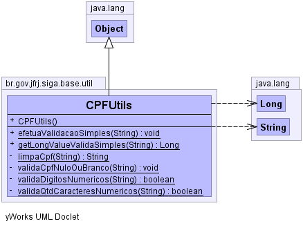

br.gov.jfrj.siga.base.util
Class CPFUtils
java.lang.Object
 br.gov.jfrj.siga.base.util.CPFUtils
br.gov.jfrj.siga.base.util.CPFUtils
public class CPFUtils
- extends java.lang.Object
-
-

| Methods inherited from class java.lang.Object |
clone, equals, finalize, getClass, hashCode, notify, notifyAll, toString, wait, wait, wait |
CPFUtils
public CPFUtils()
efetuaValidacaoSimples
public static void efetuaValidacaoSimples(java.lang.String cpf)
throws AplicacaoException
- Valida se o CPF é nulo ou em Branco e se os caracteres do CPF são numéricos com exceção do "." e do "-".
- Parameters:
cpf -
- Throws:
AplicacaoException
validaQtdCaracteresNumericos
private static boolean validaQtdCaracteresNumericos(java.lang.String cpf)
throws AplicacaoException
- Throws:
AplicacaoException
validaCpfNuloOuBranco
private static void validaCpfNuloOuBranco(java.lang.String cpf)
throws AplicacaoException
- Throws:
AplicacaoException
validaDigitosNumericos
private static boolean validaDigitosNumericos(java.lang.String cpfLimpo)
throws AplicacaoException
- Throws:
AplicacaoException
limpaCpf
private static java.lang.String limpaCpf(java.lang.String cpf)
getLongValueValidaSimples
public static java.lang.Long getLongValueValidaSimples(java.lang.String cpf)
throws AplicacaoException
- Parameters:
cpf -
- Returns:
- o valor Long do CPF utilizando o método
efetuaValidacaoSimples
para validar o CPF antes de efetuar a conversão.
- Throws:
AplicacaoException